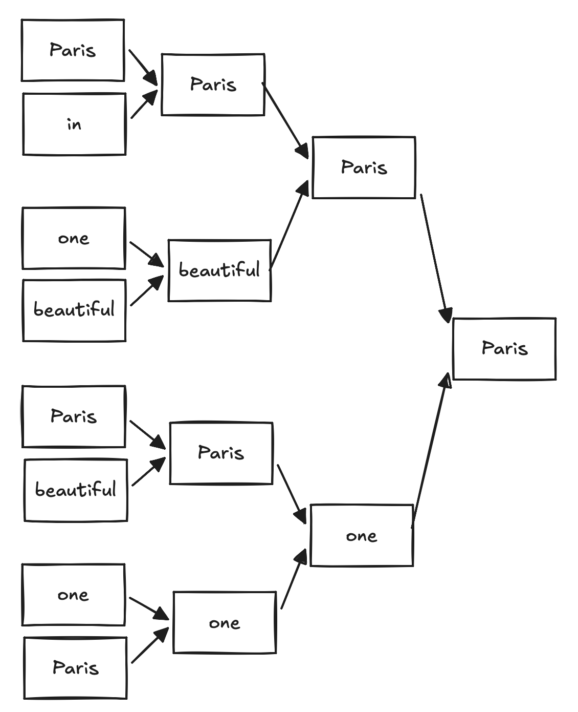
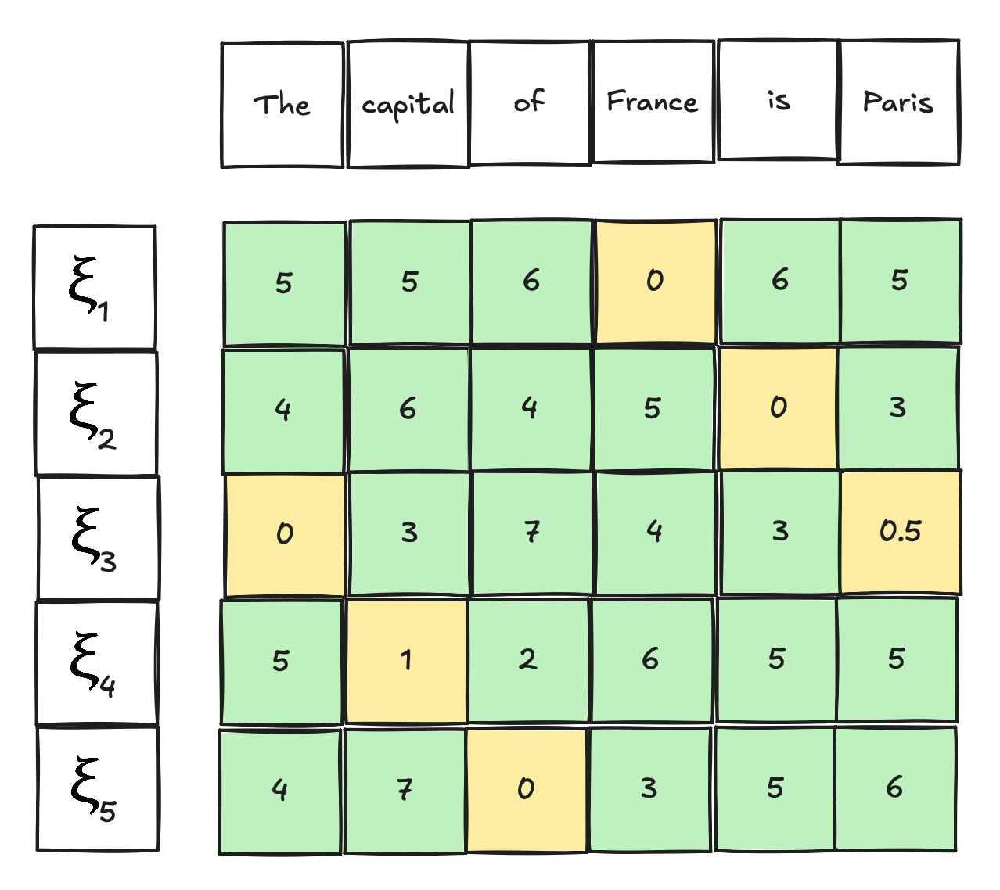

Language model watermarks embed a hidden statistical signal into generated text so that its origin can later be detected. A useful watermark should not affect the distribution of chosen tokens and should remain detectable even after the text has been edited.
All watermarkers can be broken down into two parts: (1) a sampler which chooses how to sample tokens to embed a statistical signal; and (2) a detector which, given possibly watermarked and edited text, computes a score for how likely the text was generated by a watermarker using the sampler.
Cyclic Tournament Sampling is a combination of the Tournament Sampler from Google DeepMind's SynthID-Text1 with the detector from Kuditipudi et al.2 DeepMind's SynthID-Text allows for more control and stronger signal than existing sampling methods while Kuditipudi et al. provides a detector that is strongly robust to text edits and insertions. By combining the two Cyclic Tournament Sampling hopes to create a text watermarker that provides strong, tunable, statistical signal even under text deletions and insertions. The combination of these two is novel.
All code is written up and can be found on GitHub. Tournament watermarking does not require training and can be immediately evaluated once parameters are chosen. Evaluations have already been done on Modal using Gemma-2-9b; preliminary experiments show that unmodified watermarked text has a 1.0 detection rate with a median p-value of 0.0002. Check under the results folder in the repo for the full breakdown.
To make detection quicker, Kuditipudi et al. takes advantage of a reference null distribution Very simply, this is a pre-sampled distribution which is computed once and used to make detection much much faster. (See Appendix D.3 of Kuditipudi et al.2).
This reference distribution takes around 10 hours to calculate per model on an Nvidia A10 GPU. I wish to compare Cyclic Tournament sampling to 2 other existing approaches (Gumbel and ITS sampling) and using 3 different parameter setups (varying the number of tournament rounds) for calculation. This means 10 * 2 * 3 = 60 hours of compute. At current rates, ($0.000306/sec), this will cost $65 to compute. After this, I anticipate around 20 hours of time for evaluating the models, adding an additional $20 dollars to compute costs.
This means total costs rest at around $85. Modal receipts will be provided once done evaluating with the cost summary too.